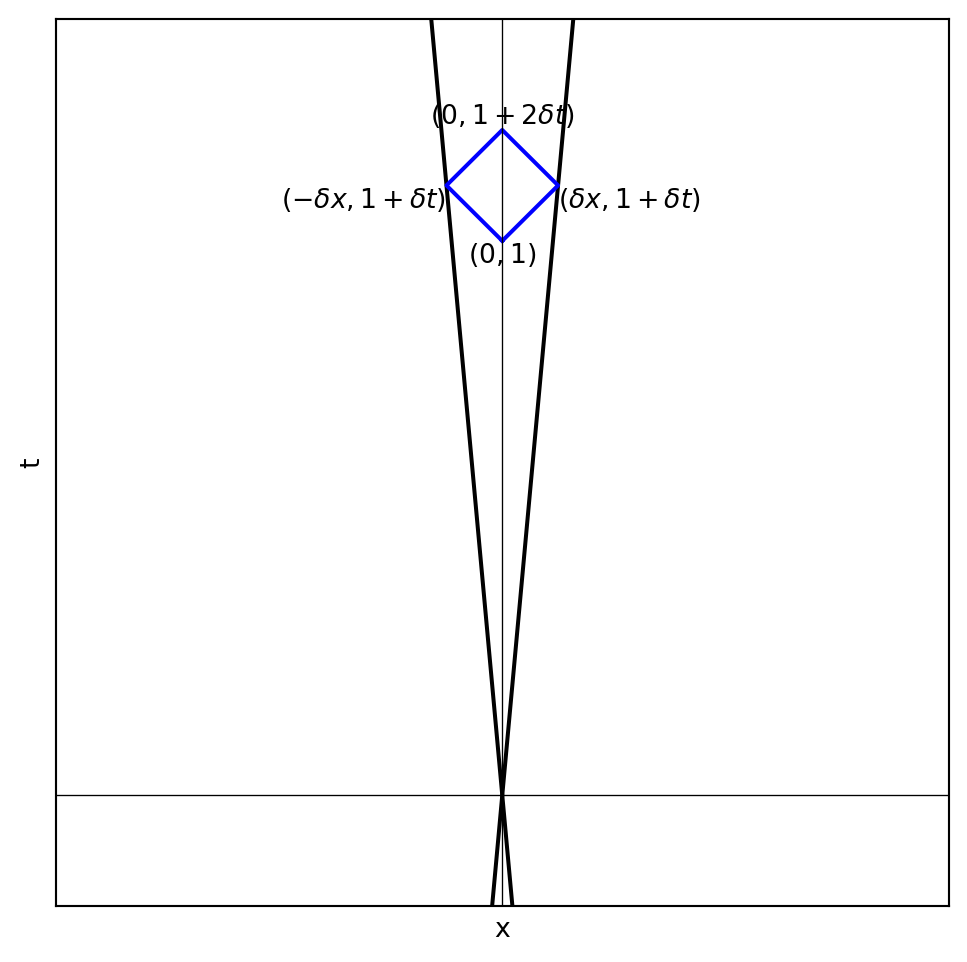
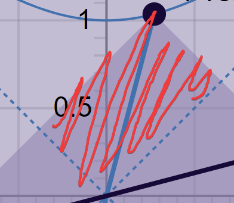
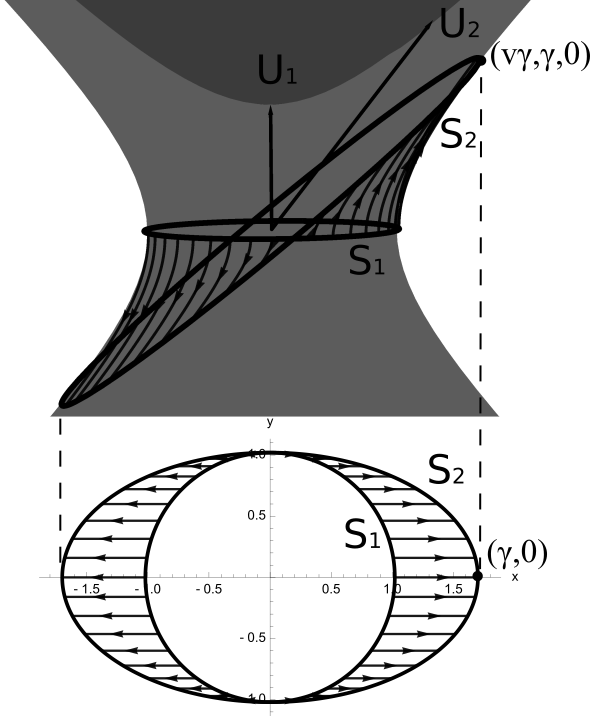
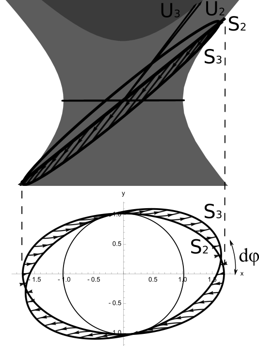
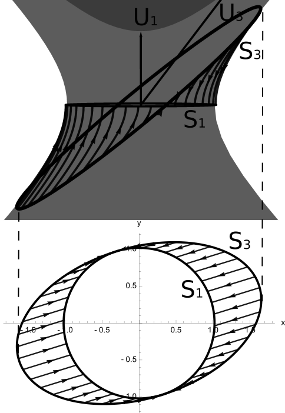

Relativity, in general
The Erlangen program
In the eyes of a geometer, special relativity is not mysterious, but it is simply another geometry that resembles our familiar Euclidean geometry of the plane, and the spherical geometry of the earth. Just like how Euclid compressed the geometry of the plane into around 20 axioms, we can compress the geometry of spacetime into the following axioms:
- Spacetime is a smooth structure, shaped like1 the real vector space \(\mathbb{R}^{n+1}\), where \(n\) is the number of spatial dimensions, and \(1\) is the number of temporal dimensions.
- Spacetime is symmetric under rotation, translation, and constant velocity motion.
- There exists a fundamental speed, a “conversion factor” between the spatial and temporal dimensions, which we call \(c\).
- There are many ways to map spacetime into \(\mathbb{R}^{n+1}\), but only some of them are physically meaningful. Those are called the (inertial) coordinate systems.
- You can go from any one coordinate system to any other by a coordinate transformation.
- Transformations can be combined one after another, and they can be reversed. That is, they make up a group, named the symmetry group of spacetime.
- The symmetry group is smooth and connected, meaning that starting with the “do-nothing” identity transformation, you can combine it with tiny transformations, and end up at any other transformation.
1 In jargon, it is isomorphic as a smooth manifold to \(\mathbb{R}^{n+1}\), or diffeomorphic to \(\mathbb{R}^{n+1}\).
Do not worry if some terms were used without a precise definition. You can start with your best intuitive guess, and sculpt them as we go.
We will follow the spirit of Erlangen program, which states clearly what our target is (Klein 1893):
Given a manifoldness [smooth space] and a group of transformations of the same; to develop theory of invariants relating to that group. This is the general problem, and it comprehends not alone ordinary geometry, but also and in particular the more recent geometrical theories which we propose to discuss, and the different methods of treating manifoldnesses of \(n\) dimensions.
Considering that Felix Klein first stated it in 1872, decades before special relativity, this is prescient.
Applied to special relativity, our target is to start with the axioms, find out something about what kinds of symmetries there can be, and what kinds of objects are unchanged by symmetries. In other words, we will study the geometry of spacetime.
Physics and mathematics
So far, while we were talking about “spacetime”, we were actually talking about mathematical objects. There is no necessary connection between the mathematical objects and whatever we observe in the real world. So why do we call those mathematical objects with physically suggestive names like “spacetime”?
Well, special relativity is really a mathematical object. It is connected to the physical world like all objects in mathematical physics: by experiments. Experimental data is physical, and by studying the mathematical-object special relativity, we found that it can generate the experimental data with a minimal amount of “glue” between the physical world and the mathematical world. The “glue” looks like:
- Physical events in physical spacetime are mathematical points in mathematical spacetime.
- Physical light moves at the mathematical speed of \(c\)
- Physical clocks tick at a mathematical constant rate.
- If you move a physical clock from physical-here to physical-there, it is still ticking at the same mathematical constant rate.
- …
Einstein’s The Meaning of Relativity* (Albert Einstein 1922) details physical and mathematical correspondences, such as clock synchronization and the movement of meter sticks.
As far as the laws of mathematics refer to reality, they are not certain; and as far as they are certain, they do not refer to reality.
Relativity in 1+1 dimensions
Making one coordinate system
To begin, let’s consider relativity in 1+1 dimensions. We will start with a “default” coordinate system (“the rest frame”).
In the beginning was just a point in spacetime. We call this the origin, and write its coordinates as \(x=0, t=0\). The world was yet without form. To give it form, we build a meter stick and an infinite number of light bulbs.
We put a light bulb at the origin. Because the bulb does not “stand still”, the light bulb traces out a path in spacetime. We call this path the \(t\)-axis at \(x=0\). Because the bulb does not stand still, we cannot properly say it is “at the origin”, but rather “passing the origin”.
any real body must have extension in four directions: it must have Length, Breadth, Thickness, and—Duration. But through a natural infirmity of the flesh, which I will explain to you in a moment, we incline to overlook this fact. There are really four dimensions, three which we call the three planes of Space, and a fourth, Time. There is, however, a tendency to draw an unreal distinction between the former three dimensions and the latter, because it happens that our consciousness moves intermittently in one direction along the latter from the beginning to the end of our lives.
— The Time Traveller, The Time Machine, Chapter 1
We put another light bulb to the left of the light bulb passing the origin, separated by one meter stick. This light bulb traces out a line at \(x=1\). And so on. Thus, we obtain an infinite number of lines: \(\dots, x = -1, x = 0, x = +1, \dots\). By subdividing the meter stick, we obtain one line \(x = r\) for each real number \(r\).
Now we have measured space, we will measure time. We remove all light bulbs except two: one at \(x=0\), one at \(x=1\). At origin, the \(x=0\) light bulb flashes, and then the light bulb at \(x=1\) flashes when it receives the flash. When the light bulb at \(x=0\) receives the echo, this is the echo event – and we write it down as \(x=0, t=2\). Let spacetime reverberate with shining echoes, and in this way, every point in spacetime receives a unique coordinate \((x, t)\).
Notice that in this construction, the fundamental speed \(c\) is equal to one, and if we draw space and time as two perpendicular directions on a graph-paper, then the trajectory of every light is a 45-degree straight line on the graph-paper. These are not fundamental aspects of theory, but are convenient outcomes given by how we constructed the coordinate system.
Abstractly speaking, a coordinate system is a function that maps a point in spacetime to two real numbers, like \((x, t): \mathcal{M} \to \mathbb{R}^{1+1}\). Our coordinate system constructed so far means that:
- The origin-point \(p_O\) has coordinates \(x(p_O) = 0, t(p_O) = 0\).
- If a beam of light is traveling to the right, and passes a certain point \(p\), then the set of all points on the beam of light is of form \(\{q : x(q) - x(p) = t(q) - t(p)\}\).
- And so on.
Such explicit distinction between the spacetime itself and the coordinate system is uncommon in physics, and once you are used to it, you should throw it into your subconscious like a muscle memory. However, it is good to keep it in mind for now.
The first moving frame
The integrity of the coordinate system is based on the meter stick. If two light bulbs are moving relative to each other, then they cannot be always connected by a meter stick – one of them would bump into the meter stick, or move away from it. In other words, the entire system is static.
Now, we introduce another frame, moving at a velocity \(v\) relative to the first. While there is no fundamental reason to privilege one over the other, we call one the “rest frame” and the other the “moving frame” for convenience.
The moving frame constructs its own coordinate system \((x', t')\). What must it look like?
Since the line \(x' = 0\) is constructed by the trajectory of the light bulb that passes the origin, we know that the \(x' = 0\) line is \(\{p : x(p) = v t(p)\}\). However, when it comes to the \(x' = 1\) line, we have a problem: How long should be the meter stick in the moving frame be? What does it even mean to compare a meter stick in a moving frame with a meter stick in the resting frame?
This difficulty is not pedantic. In the resting frame, checking that two meter sticks are equal means taking one, accelerating it then decelerating it, until it overlaps exactly with the other. This does not apply if they are in relative motion.
The solution is another “gluing”. Like how we “glued” the mathematical world with the physical world, we also glue one frame with another frame. This is connection, a central idea in differential geometry. However we will just do this intuitively, since in special relativity, connections are done in the most straightforward way.
To connect two frames, we divide their difference into tiny steps, and then do those tiny steps one after another. So, if we know how to connect two frames when \(v\) is an infinitesimal, then we know how to connect two arbitrary frames by taking an integral.
So for now, let \(v\) be an infinitesimal. What should be the meter stick in the moving frame? Its meter stick is whatever is necessary so that light speed is \(1\) in the moving frame. So, if we know how to tick the moving clock, we know how to build the moving meter stick.
In the resting frame, the clock passing the origin makes a tick at every point:
\[\dots, (0, -1), (0, 0), (0, +1), \dots\]
In the moving frame, the clock passing the origin makes a tick at every point:
\[\dots, (-v \; ?, -?), (0, 0), (v \; ?, ?), \dots\]
The naive choice is \(? = 1\). With this seemingly trivial step, we have in fact completely defined special relativity – all else is derivation.
Why \(? = 1\)
By the smoothness axiom, if \(v\) is infinitesimal, the coordinate transformation between the rest frame and the moving frame should be infinitesimally close to the identity.
Since special relativity does not distinguish left from right, if we were to make the moving frame move at velocity \(-v\), then the coordinate transformation should send \((0, 1)\) to \((-\delta x, 1 + \delta t)\) by mirror symmetry.
Now, if we compose two boosts, first with \(v\) then with \(-v\), then we would send \((0, 1)\) to \((0, 1+ 2\delta t)\). But we really should get back to \((0, 1)\) since we are back to the resting frame again. Therefore \(\delta t = 0\).

import matplotlib.pyplot as plt
import numpy as np
delta_t = 0.1
delta_x = 0.1
point_A = (0, 1)
point_B = (delta_x, 1 + delta_t)
point_C = (0, 1 + 2 * delta_t)
point_D = (-delta_x, 1 + delta_t)
origin = (0, 0)
plt.figure(figsize=(6, 6))
slope_B = (point_B[1] - origin[1]) / (point_B[0] - origin[0])
x_inf_B = np.array([-1, 1])
y_inf_B = slope_B * (x_inf_B - origin[0]) + origin[1]
slope_D = (point_D[1] - origin[1]) / (point_D[0] - origin[0])
x_inf_D = np.array([-1, 1])
y_inf_D = slope_D * (x_inf_D - origin[0]) + origin[1]
plt.plot(x_inf_B, y_inf_B, "k-", label="Extended Line to $(\delta x, 1 + \delta t)$")
plt.plot(x_inf_D, y_inf_D, "k-", label="Extended Line to $(-\delta x, 1 + \delta t)$")
plt.plot(*zip(*[point_A, point_B, point_C, point_D, point_A]), "b-")
plt.text(*point_A, "$(0, 1)$", verticalalignment="top", horizontalalignment="center")
plt.text(
*point_B,
"$(\delta x, 1 + \delta t)$",
verticalalignment="top",
horizontalalignment="left"
)
plt.text(
*point_C,
"$(0, 1 + 2 \delta t)$",
verticalalignment="bottom",
horizontalalignment="center"
)
plt.text(
*point_D,
"$(-\delta x, 1 + \delta t)$",
verticalalignment="top",
horizontalalignment="right"
)
plt.xticks([]), plt.yticks([])
plt.xlim(-0.8, 0.8)
plt.ylim(-0.2, 1.4)
plt.xlabel("x")
plt.ylabel("t")
plt.axhline(0, color="black", linewidth=0.5)
plt.axvline(0, color="black", linewidth=0.5)
plt.grid(True)
plt.show()The Lorentz transformations
In the resting frame, we constructed the meter stick by shooting out one pulse of light, then listening for the echo that arrives two ticks later. The point at which the echo is reflected is one meter stick away. Equivalently, we can shoot a forward-pointing light cone at \((0, -1)\), and shoot a backward-pointing light cone at \((0, +1)\). Their intersections are the two ends of two meter sticks: \((-1, 0), (+1, 0)\).
In the boosted frame, the clock passing the origin ticks at \(\dots, (-v, -1), (0, 0), (v, 1), \dots\). Therefore, we can construct its meter stick in the same way, and we would find that the two light cones intersect at \((-1, -v), (+1, +v)\). This gives us the coordinate transformation:
\[\forall p \in \mathcal{M}, \quad \begin{bmatrix} x(p) \\ t(p) \end{bmatrix} = \begin{bmatrix} 1 & v \\ v & 1 \end{bmatrix} \begin{bmatrix} x'(p) \\ t'(p) \end{bmatrix} \]
Here, we find that we need to distinguish between “active” and “passive” transformations. Everything we have said so far is “passive”. We assume that there is an underlying spacetime \(\mathcal{M}\), and we are to construct coordinate systems over it. The coordinate transformation tells us how to turn the coordinates of the same point from one coordinate system to another. However, while this is often useful, it would make everything we are going to say next very awkward.
Therefore, we immediately change our point of view: we are going to study “active” transformations from now on. While passive transformation of a clock means that we have just one clock and measure its ticks in two coordinate systems, active transformation of a clock means that we actually pick up the clock at rest frame, accelerate it on a rocket, and then let it glide at constant velocity at the moving frame, then study what the clock is doing in the rest frame.
Since an active transformation is the opposite of a passive transform, we have the active Lorentz transformation formula:
\[ \begin{bmatrix} x' \\ t' \end{bmatrix} = \begin{bmatrix} 1 & v \\ v & 1 \end{bmatrix} \begin{bmatrix} x \\ t \end{bmatrix} \tag{1}\]
This formula states that if we “pick up” the spacetime event at \((x, t)\) in the rest frame, and accelerate it infinitesimally to speed \(v\), then the spacetime event ends up at \((x', t')\) in the rest frame.
Integrating the Lorentz boosts
Since \(v\) is infinitesimal, to find the Lorentz transformation for a non-infinitesimal \(v\) (say, \(v = 10^{-100}\), which, while small, is really big for an infinitesimal), we need to integrate over it.
Before we do so, we should play with the discrete version: what happens if we repeatedly apply the matrix \(\begin{bmatrix} 1 & v \\ v & 1 \end{bmatrix}\) on the vectors \((0, 1), (1, 0)\)?
In the diagram, \(v\) is “rapidity”2. We apply the Lorentz boost with the given \(v\) repeatedly forwards and backwards. The resulting image is beautiful and suggestive: it looks like the unit hyperbolas!
2 The reason for calling it “rapidity”, instead of “velocity” would be soon clear.

Having guessed the answer, we proceed with the explicit integral to confirm our guess.
\[ \begin{aligned} \begin{bmatrix} 1 & dv \\ dv & 1 \end{bmatrix}^{\frac{v}{dv}} &= \left(I + \begin{bmatrix} 0 & 1 \\ 1 & 0 \end{bmatrix}\right)^{\frac{v}{dv}}\\ &= \exp\left(\begin{bmatrix} 0 & 1 \\ 1 & 0 \end{bmatrix} v\right) \\ &= I + \begin{bmatrix} 0 & 1 \\ 1 & 0 \end{bmatrix} v + \frac{1}{2!}v^2\begin{bmatrix} 0 & 1 \\ 1 & 0 \end{bmatrix}^2 + \frac{1}{3!}v^3\begin{bmatrix} 0 & 1 \\ 1 & 0 \end{bmatrix}^3 + \cdots \\ &= I(1 + v^2/2! + v^4/4! + \cdots) + \begin{bmatrix} 0 & 1 \\ 1 & 0 \end{bmatrix}(v + v^3/3! + v^5/5! + \cdots) \\ &= I\cosh(v) + \begin{bmatrix} 0 & 1 \\ 1 & 0 \end{bmatrix} \sinh(v) \end{aligned} \tag{2}\]
At this point, we should pause to take a careful look at \(v\). While it is the same as velocity when \(v\) is infinitesimal, it is not the same as velocity otherwise, because velocity is bounded between \(-1\) and \(+1\), whereas this \(v\) quantity is free to vary over all real values. This is why we call it “rapidity” and relabel it as \(w\), since it is like velocity, but different.
The velocity \(v\) for a given rapidity \(w\) is determined by transforming the \(t\)-axis using the Lorentz transformation matrix \(\begin{bmatrix} \cosh(w) & \sinh(w) \\ \sinh(w) & \cosh(w) \end{bmatrix}\). The \(t\)-axis \[\{(0, s) : s \in \mathbb{R}\}\] is boosted to the line \[\{(\sinh(w) s, \cosh(w) s) : s \in \mathbb{R}\}\] Therefore, the velocity of this boosted frame is \[w = \sinh(w) / \cosh(w) = \tanh(w).\]
Now you can play with the diagram below to grow a new intuitive sense of how it all ties together. After you have grown this new intuition, you can proceed.
A “spacetime square” would transform like:
3-velocity, 4-velocity, and inner product in spacetime
In the diagram above, we have used the terms 3-velocity and 4-velocity. To explain those terms, we briefly go back to 3+1 dimensions.
When we say “velocity” informally, we mean a vector in \(\mathbb{R}^3\). But how is velocity really defined? It is displacement divided by time. In relativity, when we say “3-velocity”, there are two possible representations: we can represent it as \((v_x, v_y, v_z)\), or we can represent it as \((v_x, v_y, v_z, 1)\). The first is close to how the rest of the world use “velocity”, but the second is close to how special relativity want us to use the word “velocity”. The second representation can be interpreted as follows: “The 3-velocity of an object is the spacetime displacement of the object after one tick of my clock.”.
Neither is satisfactory, however, because 3-velocity behaves badly under Lorentz transformations. The first representation \((v_x, v_y, v_z)\) does not have the time-coordinate, so it can’t even be multiplied with the Lorentz transformation matrix. The second representation \((v_x, v_y, v_z, 1)\) would, after a Lorentz transformation, have its time-coordinate \(\neq 1\).
Both problems are elegantly resolved if we use the 4-velocity, which means we have to divide 3-velocity by its norm… but what norm? Why, think back to the Erlangen program:
Given a manifoldness [smooth space] and a group of transformations of the same; to develop theory of invariants relating to that group.
In plane geometry, we know that although \(x, y, x', y'\) are geometrically meaningless, the norm-squared \((x-x')^2 + (y-y')^2\) is meaningful, because that quantity is not changed (invariant) if you apply the rotation matrix \(\begin{bmatrix}\cos\theta & \sin\theta \\ -\sin\theta & \cos\theta \end{bmatrix}\) to it. What would be an invariant for spacetime?
Looking at the picture of the Lorentz transformation in 1+1 dimensions, we can see that the intersection of the two light cones appears to have a constant area. In particular, the upper rectangle  has constant area. That is, the quantity \((x-t)(x+t)\) is preserved.
Thus we define the Minkowski norm-squared: \(\|(x, t)\|^2 := x^2 - t^2\). Note that this is not an actual square because it can be negative. However it is preserved under Lorentz transformations.
Once we have a norm-squared, we can extend it to an inner product::
\[\braket{v, w} := \frac{\|v+w\|^2 - \|v-w\|^2}{4} = v_x w_x - v_t w_t\]
which is still an invariant under Lorentz transformations, and thus physically meaningful. This extends in general to n+1 dimensions. For example, in 3+1 dimensions, the inner product is \(\sum_{i = x, y, z} v_i w_i - v_t w_t\).
With this, the 4-velocity is at hand! We just need to normalize \((v_x, v_y, v_z, 1)\), taking care to remove the negative sign:
\[ (v_x, v_y, v_z, 1)/\sqrt{-\|(v_x, v_y, v_z, 1)\|^2} = \frac{(v_x, v_y, v_z, 1)}{\sqrt{1-(v_x^2 + v_y^2 + v_z^2)}} \]
As an example of the power of this geometric algebra, we rederive the Lorentz transformation with infinitesimal boost. In the rest frame, the unit clock-tick is the vector \((0, 1)\), and the two unit meter sticks are the vectors \((-1, 0), (1, 0)\). They are uniquely defined by the two geometric properties:
\[ \braket{s, (0, 1)} = 0; \braket{s, s} = 1 \]
Therefore, in the boosted frame, the boosted meter sticks are the two solutions to
\[ \braket{s', (v, 1)} = 0; \braket{s', s'} = 1 \]
which are \(s' = (-1, v), (1, v)\). By continuity, \((1, 0)\) cannot have been boosted to \((-1, v)\), so it must be boosted to \((1, v)\). This gives us Equation 1.
Relativity in 2+1 dimensions
Infinitesimal Lorentz transformations
In 1+1 dimensions, we have only two spatial directions: left and right. In 2+1 dimensions, there is a whole circle of directions. We call this circle the “space circle”, because the alternative name “hula hoop for spacetime” sounds too silly.
Just like in 1+1 dimensions, the space circle is constructed by shooting a forward light cone at \((0, 0, -1)\) and a backward light cone at \((0, 0, +1)\). Their intersection is the space circle. A space circle plus a ticking clock together allows us to define a coordinate system with three unit vectors \((1, 0, 0), (0, 1, 0), (0, 0, 1)\). Both the clock and the space circle can be boosted. We will pick the simplest possible way to transport the ticking clock and the space circle, and experiments with Thomas precession would show that this is the right way.
Suppose we perform an infinitesimal boost by \((v_x, 0)\), then, by the same picture as in the 1+1 dimension case, we know that the clock-tick \((0, 0, 1)\) is boosted to \((v_x, 0, 1)\), and the space circle is boosted to the ellipse with long semiaxis \((1, 0, v_x)\) and short semiaxis \((0, 1, 0)\). Where should each point on the space circle go to? Since the space circle is rigid, if we know where one point must go to, we know where all points must go to.
The semiaxis \((0, 1, 0)\) is both on the original space circle and the boosted space circle. It stands to reason that the simplest pick would preserve it after the infinitesimal boost. That is, we should not “twist” the space circle under boosting. With this choice, we are forced to pick \((1, 0, v_x)\) as the boosted \((1, 0, 0)\), since it is the unique unit vector that is perpendicular to \((0, 1, 0), (v_x, 0, 1)\), and infinitesimally close to \((1, 0, 0)\).
Alternatively, we can think of Lorentz transformation in 2+1 dimensions as the same with Lorentz transformation in 1+1 dimensions, but with an extra dimension. Therefore, we can minimally modify Equation 1 to:
\[ \begin{bmatrix} x' \\ y' \\ t' \end{bmatrix} = \begin{bmatrix} 1 & 0 & v_x \\ 0 & 1 & 0 \\ v_x & 0 & 1 \end{bmatrix} \begin{bmatrix} x \\ y \\ t \end{bmatrix} \]
the same result as our previous argument.
This extends to the case of an infinitesimal boost \((v_x, v_y)\):
\[ \begin{bmatrix} x' \\ y' \\ t' \end{bmatrix} = \begin{bmatrix} 1 & 0 & v_x \\ 0 & 1 & v_y \\ v_x & v_y & 1 \end{bmatrix} \begin{bmatrix} x \\ y \\ t \end{bmatrix} \tag{3}\]
- Just guess it.
- Rotate the coordinate system so that the boost is in the \(x\)-direction, boost using the previous result, then rotate the coordinate system back. To be pedantic: We are performing one passive, then one active, then one passive transformation.
- Take the previous derivation, and modify it by strategically inserting \(v_y\) at places.
- Since two infinitesimal boosts do not interact except at the second-order infinitesimal level, and \(O(v^2) \ll O(v) \ll 1\), we are free to discard the second-order infinitesimal. Therefore, we can just multiply the two matrices together to get the full thing:
\[\begin{bmatrix} 1 & 0 & v_x \\ 0 & 1 & 0 \\ v_x & 0 & 1 \end{bmatrix} \begin{bmatrix} 1 & 0 & 0 \\ 0 & 1 & v_y \\ 0 & v_y & 1 \end{bmatrix} = \begin{bmatrix} 1 & 0 & v_x \\ 0 & 1 & v_y \\ v_x & v_y & 1 \end{bmatrix} + O(v^2)\]
Fermi–Walker transport
Equation 3 is correct, but it is still not geometric. We must convert it with only quantities that are invariant under Lorentz transformations – that is, the inner product.
Denote the 4-velocity vector \((0, 0, 1)\) by the letter \(u\), and the infinitesimal boost \((v_x, v_y, 0)\) by \(\delta u\). Then, an arbitrary vector \(e\) is boosted to \(e + \delta e\), Where
\[ \delta e = \begin{bmatrix} 0 & 0 & v_x \\ 0 & 0 & v_y \\ v_x & v_y & 0 \end{bmatrix} \begin{bmatrix} e_x \\ e_y \\ e_t \end{bmatrix} = e_t (v_x, v_y, 0) + (e_x v_x + e_y v_y) (0, 0, 1) \]
This gives us the Fermi–Walker transport equation:
\[ \delta e = - \braket{e, u} \delta u + \braket{e, \delta u}u \tag{4}\]
If you want a more amusing mental image, here it is: Consider a spaceship that looks like a spherical cow porcupine in a vacuum. Every porcupine spine is a rocket engine. The spaceship can boost in any direction, but it does not rotate. Thanks to Wigner rotation, it can rotate anyway. Now, the spaceship is performing some complicated manuever in spacetime. If we allow it to carry around a general vector pointing in an arbitrary direction \(e\), the question becomes: as the vector is boosted alongside the spaceship, how does the vector change?
Consider a problem in general relativity, where we have a vector field over spacetime, and an accelerating observer. To calculate how quickly the vector field is changing relative to the observer, we must account for:
- acceleration of the observer, using the Fermi–Walker transport equation;
- the curvature of spacetime itself, so that comparing one vector with another requires us to perform parallel transport in spacetime (with the “covariant derivative”).
General Lorentz transformations
The Lorentz transformation in 2+1 dimensions can be derived similarly to how Equation 2 was derived. Let the rapidity vector \(\vec{w}\) be equal to \(w (n_x, n_y)\), where \((n_x, n_y)\) is a unit vector (the direction of rapidity). Then the Lorentz transformation is found by performing another matrix exponentiation:
\[\exp\left(\begin{bmatrix} 0 & 0 & n_x \\ 0 & 0 & n_y \\ n_x & n_y & 0 \end{bmatrix} w\right)\]
To be more succinct, we define the matrices
\[K_x := \begin{bmatrix} 0 & 0 & 1 \\ 0 & 0 & 0 \\ 1 & 0 & 0 \end{bmatrix}, \quad K_y := \begin{bmatrix} 0 & 0 & 0 \\ 0 & 0 & 1 \\ 0 & 1 & 0 \end{bmatrix}\]
then the Lorentz transformation is just \(e^{\vec{w} \cdot \vec{K}} = e^{w \vec{n} \cdot \vec{K}}\).
Now, since \((\vec{n} \cdot \vec{K})^3 = \vec{n} \cdot \vec{K}\), we have the Lorentz transformation equation
\[ I + \sinh(w) \vec{n} \cdot \vec{K} + (\cosh(w) - 1) (\vec{n} \cdot \vec{K})^2 \tag{5}\]
This equation extends naturally to relativity in n+1 dimensions, but we will not need it.
Let \(t\) stand for the index of the time-coordinate, and let \(i, j, k\) be the indices of the space-coordinates. Then we have \[(\vec{n} \cdot \vec{K})^3 = n_in_jn_k(e_{it} + e_{ti})(e_{jt} + e_{tj})(e_{kt} + e_{tk})\]
where \(e_{mn}\) means the matrix with entry \((m, n)\) being one and all other entries being zero. We use Einstein summation convention, so repeated indices means summing over it (except \(t\), which is not an index to sum over).
Since \(e_{mn}e_{kl} = \delta_{nk} e_{ml}\), and \(i \neq t, j \neq t, k \neq t\), the above multiplication expands to 8 terms, but only two are nonzero:
\[= n_in_jn_k(e_{it}\delta_{jk} + \delta_{ij} e_{tk}) = \underbrace{\|\vec{n}\|^2}_{= 1} (n_i e_{it} + n_k e_{tk}) = n_i (e_{it} + e_{ti}) = \vec{n} \cdot \vec{K}\]
Wigner rotation
We are ready to derive a rarely discussed effect in special relativity: the Wigner rotation. Although it is as fundamental as time dilation and space contraction, it often goes unmentioned in undergraduate textbooks I have encountered.
Theorem 1 (Wigner rotation) When three boosts are made in a cycle, such as \(p_1 \to p_2 \to p_3 \to p_1\), the result is a rotation. The angle of rotation is equal to the hyperbolic area of the triangle \(p_1 p_2 p_3\), but in the opposite direction. Furthermore, the hyperbolic area is equal to the angle defect of the triangle.
The phrase “in the opposite direction” means that, if, looking from the \(+t\)-direction down at the origin, you see the three 3-velocities make a counterclockwise cycle in the disk \(\{(v_x, v_y, 1) : v_x^2 + v_y^2 = 1\}\), then you would see that the Wigner rotation angle is in the clockwise direction, and vice versa. The phrase “angle defect” means \(\pi - (\angle{p_1 p_2 p_3} + \angle{p_2 p_3 p_1} + \angle{p_3 p_1 p_2})\).
Step-by-step demonstration of the Wigner rotation
Consider the simplest type of three-boost cycle as shown in the figure below. We start at the rest frame, boost to the frame with a 3-velocity of \((v_x, 0)\), then boost to the frame with a 3-velocity of \((v_x, v_x d\varphi)\), and finally boost back to the rest frame.
Tracing out the trajectory of every point on the space circle gives the following sequence:



When projected to the \(xy\)-plane, the sequence looks like:
Therefore, after three pure boosts, we end up with a rotation by \((\gamma - 1)d \varphi\) radians in the opposite direction. Here, \(\gamma\) is the long semiradius of the boosted space circle, after projecting it down to the \(xy\) plane. This is the “Lorentz factor” often used in special relativity:
\[\gamma = \frac{1}{\sqrt{1-v^2}}\]
In the rest frame, the space circle is spanned by \((1, 0, 0)\) and \((0, 1, 0)\). After boosting by the 3-velocity \((v, 0)\), it is boosted to an ellipse with semiaxes \((\cosh(w), 0, \sinh(w)), (0, 1, 0)\), where \(w = \arctanh(v)\) is its rapidity. Thus, its projection to the \(xy\) plane is an ellipse with semiaxes \((\cosh(w), 0), (0, 1)\).
\[\gamma = \cosh(w) = \cosh(\arctanh(v)) = \frac{1}{\sqrt{1-v^2}}\]
Performing boosts around a full cycle of 3-velocities and returning to our starting 3-velocity is equivalent to performing an infinite number of infinitesimal triangle-circuit boosts:
Therefore, a full cycle of boosts rotates our space circle by a full \((\gamma - 1)2\pi\) radians in the opposite direction.
Interactive app for the Wigner rotation
With this understanding, you can now fully appreciate the following interactive app demonstrating the Wigner rotation.
The left picture represents the \(xy\) plane, and the right picture represents the \(xyt\) spacetime.
You can drag the black dot on the left, which represents the 3-velocity. The 3-velocity is restricted to have maximal norm \(0.8\), to keep the app numerically stable. The blue ellipse is the projection of the space circle to the \(xy\) plane. A fixed point on the space circle is distinguished by a big red dot, so that you can see how the space circle Wigner-rotates as you drag the 3-velocity around.
In the right picture, the forward and backward light cones intersect at the space circle. You can drag and scroll to adjust the camera.
Here is a “tourist’s guide to the visualization”.
The three boosts in animated form:
Because \(\gamma - 1 = \frac{2}{3}\), if you drag the 3-velocity for 3 full cycles at maximal velocity, the space circle would complete -2 full cycles.
Suppose a particle is moving close to the speed of light and emitting photons at equal angular density in all directions in its own frame, then in the rest frame the photons are bunched in front of the particle. This is the relativistic beaming effect, or the headlight effect.
Thomas precession
The Wigner rotation formula is equivalent to the following formula, often called the Thomas precession formula:
\[ \vec{\omega} = \frac{\gamma^2}{\gamma + 1} \vec{a} \times \vec{v} \tag{6}\]
Experiments with particles moving in cyclotrons have verified this, thus justifying our guess that we should transport space circles without twisting.
Consider a particle moving counterclockwise at a constant speed \(v\) in a circle of radius \(R\). Its acceleration is \(a = v^2/R\), and after completing one cycle in time \(T = 2\pi R/v\), it has Wigner-rotated by \(-(\gamma - 1)2\pi\) radians. Simplifying, we have
\[\omega = \frac{-(\gamma - 1)2\pi}{T} = \cdots = -\frac{\gamma^2}{\gamma + 1} av\]
By the right hand rule of cross products, we can get all the directions correct with \(\vec{\omega} = \frac{\gamma^2}{\gamma + 1} \vec{a} \times \vec{v}\).
For a particle undergoing a generic acceleration, the 3-acceleration decomposes into a component parallel to the 3-velocity, and a component perpendicular to it. The parallel component does not change Wigner rotation, therefore the Thomas precession equation is still true.
However, notice that the formula is made of 3-vectors, and we know that 3-vectors are meaningless in special relativity. This suggests that something is off here. If the rest of this section does not make much sense, first read the section on Foucault pendulum, then return here.
If the Earth were flat, then we could stand at a single point, and draw two perpendicular arrows. We say, “this arrow is pointing at \(+x\)”, and “that arrow is pointing at \(+y\)”. Then we create an infinite number of missionaries. Each would pick up the two arrows and parallel-transport the arrows to their given station on the Earth. In this way, we would provide a unique direction-system for every point on the Earth.
However, because the Earth is a sphere, this does not work. Suppose we stand at the North Pole, and we do the same. Then all the missionaries would meet at the South Pole and start arguing about who has the right one, because they would all disagree. This problem happens because the Earth is curved, and transporting a vector around a cycle would rotate it.
We might shrug and say, “Well, nobody lives in the South Pole, so we will just tell our missionaries to avoid it.”. Great idea, except then they found that Emperor of China has also sent out his own missionaries. We shrug and say, “Well, we’ll just give the Emperor of China a call and ask him what angle he picked. Then we will rotate our map until all our missionaries agreed with his.”. After some fruitless fiddling with our maps, it has dawned to us that this plan is doomed. Why?
Imagine if the North Pole is at point \(N\), and the Emperor of China is at point \(C\). If somehow, we could pick our \(xy\) directions so that all our missionaries agree with his, then we can send one missionary around a three-part journey around the world: \(N \to C \to K \to N\), where \(K\) is a point off the great circle passing \(N, C\). Along the path \(N \to C\), the missionary is leaving the North Pole on a straight arc away from the North Pole, so the \(xy\) chart he is carrying agrees with the missionaries he is passing by. Similarly for the other two parts. But when the missionary has returned to the North Pole, he must find his \(xy\) chart rotated, contradiction!
There is no way to resolve this disagreement other than forcing one side to give up their coordinate system. Perhaps we will have to call up a crusade to enforce our coordinate system.
The introduction of numbers as coordinates is an act of violence.
— Hermann Weyl
Similarly, in special relativity, we can stand at the “North Pole” (rest frame), construct the \(xyz\) axes, then send out missionaries on rockets to provide directions for every inertial frame. The good news is that no two missionaries can meet each other, so there is no argument. The bad news is that we still have the Wigner rotation problem, so if some aliens are executing the same project, but starting at a different coordinate frame (perhaps because their galaxy is moving relative to ours), then it is impossible for our missionaries to agree in every frame.
So, we are forced to only use one rest frame. It is in this context that the Thomas precession formula works.
Consider an object, boosted from frame \(p_1\) to frame \(p_2\), with their 3-velocities in the rest frame being \(\vec{v}\) and \(\vec{v} + \delta \vec{v}\). To use the Thomas precession formula, we must first – in imagination – boost it back to the rest frame, and take a snapshot of its orientation against our \(xyz\) axes at origin. Then we boost it back to frame \(p_1\), boost it to \(p_2\), and boost it – in imagination – back to the rest frame again. By using the Wigner rotation formula in the rest frame, it has rotated by
\[ \frac{\gamma^2}{\gamma + 1} \delta\vec{v} \times \vec{v} \]
To emphasize again: the Thomas precession formula only works in one frame. It is neither Lorentz invariant nor geometrically meaningful. It cannot be geometrically meaningful, because it is made of 3-vectors \(\vec{v}, \vec{a}, \vec{\omega}\), and 3-vectors are geometrically meaningless in special relativity.3
3 Or as I like to say, 3-vectors are inherently violent in special relativity, and anything involving anything inherently violent is also inherently violent.
Relativity in 3+1 dimensions
We began our study of special relativity in 1+1 dimensions and discovered the Lorentz transformations, then proceeded to 2+1 dimensions and discovered Wigner rotation. In 3+1 dimensions, Wigner rotation still occurs, but there is something new: rotations are no longer describable by a single number.
This is not a place to get into the details; suffice to say that the space of rotations in \(\mathbb{R}^3\) is much harder to understand than the space of rotations in \(\mathbb{R}^2\).4 We must be more careful here.
4 The space of rotations in \(\mathbb{R}^3\) is \(SO(3)\) and that in \(\mathbb{R}^2\) is \(SO(2)\). While \(SO(2)\) is just the circle and can be easily represented by a real number or an angle, \(SO(3)\) is the projective 3-space \(\mathbb{PR}^3\) and best represented by quaternions.
Suppose we have four frames: \(0, 1, 2, 3\). We start with a tripod in frame \(0\), then boost it successively to frames \(1, 2, 3, and 0\), how much does it rotate? To discover this, we need to compose the Wigner rotation around the cycle \(0120\) with the Wigner rotation around the cycle \(0230\). The full rotation is composed of two rotations, first rotation in the plane of the triangle \(012\), and the second one in the plane of the triangle \(023\).
The Wigner rotation coming from an arbitrary sequence of boosts can be calculated easily with the Thomas precession formula, if we are willing to use violence.5 Without violence, we have to do spherical trigonometry, much harder than adding 2-dimensional rotation angles. My intuition is that it should most naturally involve the principal \(G\)-connections, where \(G = SO(n, 1)\) is the group of Lorentz transformations.
5 Since this usage of “violence” comes directly from Hermann Weyl, perhaps we can call it Weylence?
Velocity space is hyperbolic geometry
It is time to fulfill the promise in the title, that hyperbolic geometry is involved.
Our first hint that hyperbolic geometry is relevant is that we have encountered \(\cosh\) and \(\sinh\) – the hyperbolic trigonometric functions. With this hint, a quick check shows us that we are indeed dealing with hyperbolic geometry. This is easy to do in 2+1 dimensions, but it generalizes readily to n+1 dimensions after slightly cluttering the notation.
Deriving the hyperbolic metric
Since \(\|(0, 0, 1)\|^2 =-1\), under arbitrary Lorentz transformations, \((0, 0, 1)\) can, under arbitrary Lorentz transformations, reach any point on the upper half of the hyperbola \(x^2 + y^2 - t^2 = -1\). It stands to reason that the upper hyperbola, which is equivalent to a plane as a smooth manifold, should have some kind of planar geometry. We need only discover its metric. The most direct path goes through the disk of 3-velocities, which gives us the metric
\[ ds^2 = \frac{dv_\theta^2}{1-v_r^2} + \frac{dv_r^2}{(1-v_r^2)^2} \tag{7}\]
The disk of 3-velocities \(\{(v_x, v_y, 1) : v_x^2 + v_y^2 < 1\}\) is not preserved under Lorentz transformations, but we can project it back to the circular disk. This means that we can take the metric at origin
\[ds^2 = dv_x^y + dv_y^2\]
and perform a Lorentz transformation, followed by a projection, to move the origin to any other point on the disk. Multiplying the metric at the origin with the gradient-matrix gives the metric at that other point.
We exploit the rotational symmetry of the disk using polar coordinates. Express any point on the disk as \((r, \theta)\). Its local metric must be of form \(ds^2 = f(r) dr^2 + g(r) d\theta ^2 + h(r) drd\theta\) for some functions \(f, g, h\). Further, by reflection symmetry of \(\theta \leftrightarrow -\theta\), we have \(h(r) = 0\).
To find \(f(r)\), we construct an infinitesimal segment \((r, 0) \to (r+dr, 0)\) and calculate with the velocity-addition formula. Similarly, we find \(g(r)\) using the segment \((r, 0) \to (r, d\theta)\).
This is the Beltrami–Klein metric, and so we have discovered that this is exactly the Beltrami–Klein model of hyperbolic geometry. We can then project this metric onto the hyperboloid \(x^2 + y^2 - t^2 = -1\) to obtain its metric
\[ ds^2 = dx^2 + dy^2 - dt^2 = \| (dx, dy, dt) \|^2 \tag{8}\]
This, in hindsight, is obvious: We have already known that the Lorentz transformation preserves the Minkowski norm-squared. But such is the journey of discovery: the first pass is rarely the most elegant. It is probably better to write down the first pass to show how to discover things, then write a second pass to show how to tidy things. Better this than what Gauss did:
[Gauss] makes his mathematics like a fox, wiping out the traces in the sand with his tail.
Interpreting the hyperbolic geometry
Now we can connect concepts between hyperbolic geometry and special relativity.
When \(v\) is small, the Wigner rotation for a full cycle, \((\gamma - 1)2\pi\), is \(\pi v^2 + O(v^4)\), coinciding with the area enclosed by the cycle. Therefore, since both area and Wigner rotation are additive, we have proven Theorem 1.6
6 This is not a handwaved proof, but fully rigorous. The Wigner rotation of a full cycle is \(\pi v^2 + O(v^4)\), and the area enclosed by the cycle is also \(\pi v^2 + O(v^4)\). Therefore, we can integrate over an arbitrary area, to find that the Wigner rotation angle is equal to the area enclosed, up to an infinitesimal term of \(O(v^2) \to 0\).
In rocketry, if we trace out the trajectory of the rocket’s velocity on a graph paper, we obtain a hodograph. Similarly, in relativistic rocketry, a path in the velocity space is a hodograph. The length of a hodograph is the total delta-v of the rocket.
A straight line in hyperbolic space is the hodograph of the most fuel-efficient control-trajectory for a rocket to get from one velocity to another.
If a rocket explodes with spherical symmetry, the velocities of its debris will lie on a hyperbolic sphere centered at the rocket’s original velocity.
Two parables
The star worshippers
An alien race, who worshipped Rigel, Deneb, and Betelgeuse, prayed in the direction of these three stars. In order to pray in the correct direction even without seeing them, they constructed the Sacred Tripods, which are steel tripods that are oriented such that each leg points at one of the Sacred Stars. These Sacred Tripods, placed in public spaces, were required to point precisely at the Sacred Stars.
Then a Cosmic Dark Age began and the stars winked out of existence, including the Sacred Stars, but the aliens did not lose their faith. Instead, they intensified their prayers in hopes of resurrecting the Sacred Stars.
In a region of space, there were two space stations A and B, at rest with each other. The Sacred Tripod on B was unstable, and required yearly calibration against the more stable Sacred Tripod at A. So station A would align its spare Sacred Tripod to its own one, put it on a gimbal-mount, and send it by rocket to station B. B would align its Tripod with the one sent, then let the Tripod go back.
As years passed, the aliens on station B grew confident that their Tripod did not drift more than \(1''\) per year. One day, an asteroid field blocked the straight path, forcing the next shipment to make a big detour around the asteroid field. When it arrived, to their astonishment, it was found that the Tripod on B was clearly misaligned with the Tripod from A. What could be the cause of this misalignment?
The day the Earth stood still
One day, the Earth stopped spinning. This annoyed the visitors to the science museum, who wanted to see Foucault’s pendulum rotating. To satisfy those visitors, the museum keeper put the pendulum on the top of a bus, and loaded the visitors on the bus, then they started driving around the Earth at the same speed as how the Earth used to rotate at that latitude, so that after one day, they returned to the museum. The visitors looked up at the pendulum and were satisfied to see that it indeed has turned.
To find out how much the pendulum has turned, we divide up the circular trajectory into tiny segments \(p_0, p_1, \dots, p_n\), then draw tiny triangles \(p_0 p_1 N, p_1 p_2 N, \dots, p_{n-1} p_n N\), with \(N\) being the North Pole. We imagine that, instead of driving around the Earth in a circle, we drive around the triangle \(N \to p_0 \to p_1 \to N\), then the triangle \(N \to p_1 \to p_2 \to N\), etc.
When we drive around \(N \to p_0 \to p_1 \to N\), the bus makes three turns, and each time the pendulum turns by an opposite amount relative to the bus. After three turns, the bus has turned the same angle as the sum of three external angles of the triangle. By spherical trigonometry, we know that this is equal to \(2\pi - 4\pi\frac{\text{area of triangle $p_0 p_1 N$}}{\text{surface area of the Earth}}\). Thus, the pendulum has turned relative to the bus by \(-2\pi + 4\pi\frac{\text{area of triangle $p_0 p_1 N$}}{\text{surface area of the Earth}}\). The \(-2\pi\) part has no effect, as it is a full cycle, leaving us with \(\frac{\text{area of triangle $p_0 p_1 N$}}{\text{surface area of the Earth}}\).
Therefore, by adding them up, we find that after driving around an arbitrary cycle on the Earth, the pendulum would have turned by
\[4\pi\frac{\text{area of the cycle}}{\text{surface area of the Earth}}\]
We can turn this insight into a formula for Fermi–Walker transport on the Earth.
First, we scale the Earth so that its radius is one. Now set up the coordinate system \(\phi, \theta\), where \(\phi\) is the latitude (zero at equator, \(\pi/2\) at the North Pole) and \(\theta\) the longitude. At each point on the Earth (except the two poles) we set up a local frame with two unit vectors \(\hat\phi, \hat\theta\). One very important fact is that this local frame is not parallel-transported7. If you try to drive in a small circle around the North Pole, while always pointing in the direction of \(\hat\theta\), you would feel a strong centrifugal force pushing against your steering wheel. Centrifugal forces and all other “inertial forces” are nature’s way of telling you that you are not being parallel-transported.
7 Indeed, there is no way to cover the space with parallel-transported local frames, because the space is curved, and therefore if you try to transport a local frame in a cycle back to its starting point, it would have rotated against itself. To be a curved space is equivalent to have no system of parallel-transported local frame, and curvature measures the amount of rotation-against-itself that happens when you transport a local frame in an infinitesimal circle.
8 This is immediate from Archimedes’ hat-box theorem, which is the basis of the Lambert cylindrical equal-area projection.
Consider two infinitesimally close points on the Earth, \(p_1 = (\phi, \theta)\) and \(p_2 = (\phi + \delta \phi, \theta + \delta\phi)\). Since the surface area of a spherical cap around latitude \(\theta\) is \(\frac{1 -\sin\theta}{2}\) that of the whole sphere8, the area of a thin spherical triangle with vertices \(p_1, p_2, N\) is
\[4\pi\frac{1 -\sin\theta}{2} \times \frac{\delta\phi}{2\pi} = (1-\sin\theta)\delta\phi\]
Thus, if we parallel transport a vector clockwise in the order \(p_1 \to N \to p_2 \to p_1\), then the vector would turn counterclockwise by \(-(1 -\sin\theta) \delta\phi\).
Now, consider two ways to move the pendulum from \(p_1\) to \(p_2\). We can transport it directly, or detour through the North Pole. If we detour through the North Pole like \(p_1 \to N \to p_2\), then by the same argument as the “polar bear puzzle”9, you see that the pendulum has rotated counterclockwise relative to the local frame by \(-\delta\phi\). Then we complete its journey with \(p_2 \to p_1\), to create an absolute10 full \(-(1 -\sin\theta) \delta\phi\) rotation. Therefore, moving it \(p_2 \to p_1\) has created a rotation relative to the local frame by \(\sin\theta \delta\phi\). Since we are actually moving it \(p_1 \to p_2\), we reverse the sign, and obtain our Fermi–Walker transport equation (the Earthbound version):
9 You walk 1 km south, 1 km east, and 1 km north, and ended up at the same point. You see a bear. Why is the bear white?
10 Relative rotation means that we are measuring the orientation of the vector relative to the local frame. However, since the frames themselves are not parallel-transports of each other, relative rotation is arbitrary and not a fact of geometry, but a fact of convenience. If you move the vector back to its starting point, however, there is absolutely no dispute about how much it has rotated, and it does not depend on any system of local frames. You just have to compare the vector against itself.
\[ \delta(\text{vector angle}) = -\sin\theta \delta\phi \tag{9}\]
Applied to the Foucault pendulum problem, we find that it rotates clockwise by \(2\pi \sin\theta\) every day, and it takes \(\frac{1}{\sin\theta}\) days11 to make a full rotation. At the Paris Observatory, the original place where Foucault made his experiment in 1851, we have
11 To be precise, this is a sidereal day, the time it takes for the Earth to rotate one cycle relative to distant stars. It is shorter than a solar day.
\[\theta = \mathrm{48^\circ 52' N}, \quad \text{period} = \frac{\mathrm{23h56'}}{\sin \theta} \approx \mathrm{31\,h\,50\,min}\]
If a museum visitor can stay for 5 minutes at the pendulum, then they would see the pendulum complete \(\approx 1/382\) of a cycle. Typical museums would put up about 400 wooden blocks in a cycle, to be knocked down by the pendulum. This allows each visitor to see at least one block being knocked down.
History notes
The history of the phenomenon
The history of the Wigner rotation is winding and complicated. Here is a brief summary. The details are given in (Walter 1999).
- 1905: Einstein published special relativity. (A. Einstein 1905)
- 1908: Minkowski published the spacetime interpretation of special relativity. (Minkowski 1908)
- 1910: Vladimir Varićak (Varićak 1910) and E. T. Whittaker (Whittaker 1910, 441) both introduced the hyperbolic functions and the rapidity parameter.
- 1911: Alfred Robb named the rapidity parameter, and found that velocities compose in hyperbolic space. (Robb 1911).
- 1913: Émile Borel discovered the Wigner rotation as a part of his general study of special relativity by hyperbolic geometry. (Borel 1913)
- 1921: Fermi discovered the Fermi–Walker transport. (Fermi 1921)
- 1926: Llewellyn Thomas rediscovered the Thomas precession, a special case of the Wigner rotation. (Thomas 1926)
- 1932: Walker rediscovered the Fermi–Walker transport. (Walker 1932)
- 1939: Wigner rediscovered the Wigner rotation. (Wigner 1939)
Pedagogical attempts to present the Foucault pendulum and the Wigner rotation have been numerous, such as (Criado and Alamo 2009), but perhaps due to the decade-long latency in academic publishing, none has yet made it into the usual undergraduate textbooks. Tevian Dray has written an entire textbook (Dray 2021) treating both special and general relativity in the same geometric style. For a summary paper of the textbook, see (Dray 2017).
Amusing quotes from (Walter 1999)
[After 1907] Minkowski never again referred to a manifold as both four-dimensional and non-Euclidean. Along with the problematic label, the geometric interpretation of velocity vectors likewise vanishes from view in Minkowski’s subsequent writings. Felix Klein, for one, regretted the change; in his opinion, Minkowski later hid from view his “innermost mathematical, especially invariant-theoretical thoughts” on theory of relativity (Klein 1927, 75).
Planck lavished praise on Einstein for his modification of the concept of time:
It need scarcely be emphasized that this new view of the concept of time makes the most serious demands upon the capacity of abstraction and the imaginative power of the physicist. It surpasses in boldness everything achieved so far in speculative investigations of nature, and even in philosophical theories of knowledge: nonEuclidean geometry is child’s play in comparison.30 (Planck 1910a, 117)
Under the new space-time view, Minkowski announced, “Three-dimensional geometry becomes a chapter of four-dimensional physics.” In the same triumphant spirit, Minkowski suggested that his new four-dimensional understanding of the laws of physics deserved its own label. The “Principle of the Hyperbolic World” that he had tried on Hurwitz was shelved in favor of the more ecumenical “Postulate of the Absolute World” (Minkowski 1909, 82). Although Minkowski explained this to mean that only the four-dimensional world in space and time is given by phenomena (Minkowski 1909, 82), one suspects an inside joke with Hurwitz, since in the German mathematical community, hyperbolic geometry was sometimes referred to as absolute geometry.
Even the watered-down version of the space-time theory presented in Minkowski’s Cologne lecture repelled some physicists. For instance, Willy Wien’s cousin Max (1866-1938), a physicist at Danzig Polytechnic, confided to his friend Arnold Sommerfeld that reading Minkowski gave him vertigo:
Sommer[feld] maintains that [Minkowski’s] speech in Cologne was simply grand; when reading it, however, I always get a slight brain-shiver, now (that) space and time appear conglomerated together in a gray, miserable chaos.36 (Max Wien to Arnold Sommerfeld, February 16, 1909, Benz 1975, 71)
The history of this document
During high school, I was in the physics Olympiad team. One afternoon, I got into an argument with someone about what happens if you take a square \([0, 1] \times [0, 1]\), boost it by \((v, 0)\), and then boost it by \((0, v')\) within the boosted frame. By the velocity addition formula, the square would move at 3-velocity
\[ (v, \frac{v'\sqrt{1-v^2}}{1+vv'}) \]
If \(v' = \frac{v}{\sqrt{1-v^2}-v^2}\), then the square would be moving at \((v, v)\).
Then, the paradox. He argued that, by length contraction along the diagonal, the square should look like a diamond:
I objected that in the boosted frame, the square looks like a rectangle moving upwards. Decompose the rectangle into a bundle of line-segments, all parallel to the \(y'\)-axis. Now, each line-segment is moving in the \(y'\)-direction, and \(y'\) is parallel to \(y\) (since the perpendicular direction is preserved under boosting), we know that each moving line-segment would still be a line-segment parallel to the \(y\)-axis in the resting frame, still moving in the \(y\)-direction – just slower. Therefore, in the resting frame, the whole square would look like a parallelogram, with two sides parallel to the \(y\)-axis, and the other two sides oblique to the \(x\)-axis.
After a brief shouting match, we figured out that I was right, but also that we met something no teacher has taught us before: you can create a rotation in special relativity by pure boosting.
During my third undergraduate year, I took a course in theoretical physics, which required a term paper. I first tried to write one on the Ostrogradsky instability, but could not understand it, so I quickly switched to finally solving the rotation effect in special relativity.
Suffice to say that, after some hours walking and staring at the night sky, I figured out that it is nothing else than hyperbolic geometry, and nothing more paradoxical than the fact that the external angle of a hyperbolic triangle is equal to \(2\pi + (\text{area of the triangle})\), which I remember from hyperbolic geometry.
This is the old poler-bear puzzle again. If you walk from the North Pole to the equator, then walk \(1/4\) of the way around the Earth, and finally walk back to the North Pole, you will have traversed a triangle with an external angle of \(\frac 32 \pi\). In general, the external angle of a triangle on the unit sphere is \(2\pi - (\text{area of the triangle})\), the perfect opposite to the case in hyperbolic geometry.
Half-mad, I ran home and smashed into the search engine all the keywords I knew must be there: “special relativity rotation hyperbolic triangle Foucault pendulum”. My disappointment was swift and certain: This had been repeatedly discovered over the past hundred years.
Bitterly, I searched every undergraduate physics textbook in the school library. None included it. The standard textbook (Goldstein, Poole, and Safko 2008, sec. 7.3) went on a three-page long computation and concluded that, indeed, we obtain a rotation matrix:
The spatial rotation resulting from the successive application of two nonparallel Lorentz transformations has been declared every bit as paradoxical as the more frequently discussed apparent violations of common sense, such as the so-calIed “twin paradox”. But the present apparent paradox has important applications, especially in atomic physics, and therefore has been abundantly verified experimentally.
From that moment on I swore that I would finally present it in a way so simple and direct that it will never be forgotten. I had found the way, and it remained to publicize to the world.
There was little use in writing another paper about it, as despite the many papers over the century, somehow this effect did not end up in the physics textbooks. I considered writing a blog post about it, but mere words and figures seemed insufficient. I tried promoting this idea to various physics popularizers on YouTube, but none picked it up. What I needed was interactive animation, but JavaScript defeated me, so I kept it in the backlog until now. With ChatGPT I could finally write JavaScript without losing all my sanity, and so, here it is.
Some bonus content
Finding the Wigner rotation in one line
If you know Lie algebra, then the Wigner rotation is immediate: calculate the commutator.
\[ [K_x, K_y] := K_x K_y - K_y K_x = \begin{bmatrix} 0 & 1 & 0 \\ -1 & 0 & 0 \\ 0 & 0 & 0 \end{bmatrix} \]
This is the generator of rotation in the \(xy\) plane.
Go anywhere with just five boosts
Given a rocket that can boost in any direction, but not rotate, you can still make it rotate by Wigner rotation. If you must perform an arbitrary Lorentz transformation, how many boosts do you need?
In general, if you have a Lorentz-transformed rocket, you can apply a carefully aimed boost so that it comes to rest, then apply Wigner rotation to return it back to the starting position.
With a cycle of three boosts, the Wigner rotation angle is equal to the angle defect of the hyperbolic triangle, which can take any value in \((0, \pi)\) (you can’t have one with zero inner angle sum, but you can get arbitrarily close). With a cycle of four boosts, we can cover the \(\pi\) case as well, since a hyperbolic square can have any angle defect in \((0, 2\pi)\).
In summary: almost any Lorentz transformation can be obtained in four boosts, except those requiring a 180-degree rotation, which need five boosts.
In fact, the result can be improved by one boost: every Lorentz transformation can be done in three boosts, except “180-degree screws”, which require four. The solution given in (Lightman et al. 1975, 153–58) uses matrix algebra in \(\mathbb{C}^{2\times 2}\), which is too algebraic for me12. However, I have never found a satisfactory geometric method to demonstrate this, despite thinking on and off about it several times over the years.
12In these days the angel of topology and the devil of abstract algebra fight for the soul of each individual mathematical domain.
— Hermann Weyl
Problem 1.28. What is the least number of pure boosts which generate an arbitrary Lorentz transformation? Note: This is a difficult problem! (Lightman et al. 1975)